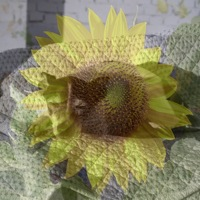
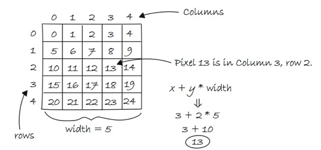
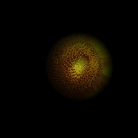
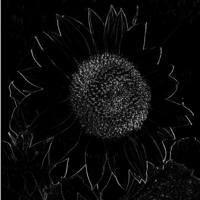
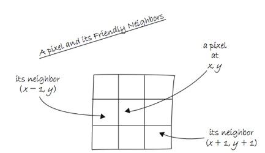
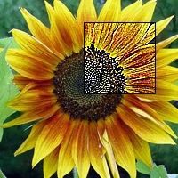
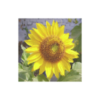
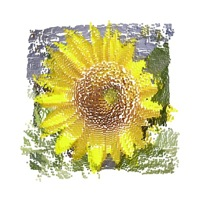
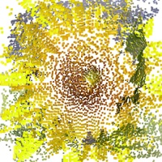

Portions of this work are from the book, Learning Processing, by Daniel Shiffman, published by Morgan Kaufmann Publishers, Copyright 2008 Elsevier Inc. All rights reserved.
This tutorial is for Processing version 1.0+. If you see any errors or have comments, please let us know.
A digital image is nothing more than data – numbers indicating variations of red, green, and blue at a particular location on a grid of pixels. Most of the time, we view these pixels as miniature rectangles sandwiched together on a computer screen. With a little creative thinking and some lower level manipulation of pixels with code, however, we can display that information in a myriad of ways. This tutorial is dedicated to breaking out of simple shape drawing in Processing and using images (and their pixels) as the building blocks of Processing graphics.Getting started with images.
Hopefully, you are comfortable with the idea of data types. You probably specify them often – a float variable called "speed,",an int named "x," etc. These are all primitive data types, bits sitting in the computer’s memory ready for our use. Though perhaps a bit trickier, you hopefully also use objects, complex data types that store multiple pieces of data (along with functionality) -- a "Ball" class, for example, might include floating point variables for location, size, and speed as well as methods to move, display itself, and so on.In addition to user-defined objects (such as Ball), Processing has a bunch of handy classes all ready to go without us writing any code. In this tutorial, we'll examine PImage, a class for loading and displaying an image as well as looking at its pixels.
Example: "Hello World" images
// Declaring a variable of type PImage
PImage img;
void setup() {
size(320,240);
// Make a new instance of a PImage by loading an image file
img = loadImage("mysummervacation.jpg");
}
void draw() {
background(0);
// Draw the image to the screen at coordinate (0,0)
image(img,0,0);
}
Using an instance of a PImage object is no different than using a user-defined class. First, a variable of type PImage, named "img," is declared. Second, a new instance of a PImage object is created via the loadimage() method. loadimage() takes one argument, a String indicating a file name, and loads the that file into memory. loadimage() looks for image files stored in your Processing sketch’s "data" folder.
|
The Data Folder: How do I get there?
Images can be added to the data folder automatically via: Sketch --> Add File. . . or manually: Sketch --> Show Sketch Folder This will open up the sketch folder. If there is no data directory create one. Otherwise, place your image files inside. Processing accepts the following file formats for images: GIF, JPG, TGA, PNG. |
In the above example, it may seem a bit peculiar that we never called a "constructor" to instantiate the PImage object, saying "new Pimage()". After all, in most object-related examples, a constructor is a must for producing an object instance.
Spaceship ss = new Spaceship(); Flower flr = new Flower(25);yet:
PImage img = loadImage("file.jpg");
In fact, the loadimage() function performs the work of a constructor, returning a brand new instance of a PImage object generated from the specified filename. We can think of it as the PImage constructor for loading images from a file. For creating a blank image, the createimage() function is used.
// Create a blank image, 200x200 pixels with RGB color PImage img = createImage(200,200,RGB);We should also note that the process of loading the image from the hard drive into memory is a slow one, and we should make sure our program only has to do it once, in setup(). Loading images in draw() may result in slow performance as well as "Out of Memory" errors.
Once the image is loaded, it is displayed with the image() function. The image() function must include 3 arguments -- the image to be displayed, the x location, and the y location. Optionally two arguments can be added to resize the image to a certain width and height.
image(img,10,20,90,60);
Your very first image processing filter
When displaying an image, you might like to alter its appearance. Perhaps you would like the image to appear darker, transparent, blue-ish, etc. This type of simple image filtering is achieved with Processing’s tint() function. tint() is essentially the image equivalent of shape’s fill(), setting the color and alpha transparency for displaying an image on screen. An image, nevertheless, is not usually all one color. The arguments for tint() simply specify how much of a given color to use for every pixel of that image, as well as how transparent those pixels should appear.For the following examples, we will assume that two images (a sunflower and a dog) have been loaded and the dog is displayed as the background (which will allow us demonstrate transparency.)
PImage sunflower = loadImage("sunflower.jpg");
PImage dog = loadImage("dog.jpg");
background(dog);
If tint() receives one argument, only the brightness of the image is affected.
// The image retains its original state. tint(255); image(sunflower,0,0);
//The image appears darker. tint(100); image(sunflower,0,0);A second argument will change the image’s alpha transparency.

// The image is at 50% opacity. tint(255,127); image(sunflower,0,0);Three arguments affect the brightness of the red, green, and blue components of each color.
// None of its red, most of its green, and all of its blue. tint(0,200,255); image(sunflower,0,0);Finally, adding a fourth argument to the method manipulates the alpha (same as with 2). Incidentally, the range of values for tint() can be specified with colorMode().
// The image is tinted red and transparent. tint(255,0,0,100); image(sunflower,0,0);
Pixels, pixels, and more pixels
If you’ve just begun using Processing you may have mistakenly thought that the only offered means for drawing to the screen is through a function call. "Draw a line between these points" or "Fill an ellipse with red" or "load this JPG image and place it on the screen here." But somewhere, somehow, someone had to write code that translates these function calls into setting the individual pixels on the screen to reflect the requested shape. A line doesn’t appear because we say line(), it appears because we color all the pixels along a linear path between two points. Fortunately, we don’t have to manage this lower-level-pixel-setting on a day-to-day basis. We have the developers of Processing (and Java) to thank for the many drawing functions that take care of this business.Nevertheless, from time to time, we do want to break out of our mundane shape drawing existence and deal with the pixels on the screen directly. Processing provides this functionality via the pixels array.
We are familiar with the idea of each pixel on the screen having an X and Y position in a two dimensional window. However, the array pixels has only one dimension, storing color values in linear sequence.
Take the following simple example. This program sets each pixel in a window to a random grayscale value. The pixels array is just like an other array, the only difference is that we don’t have to declare it since it is a Processing built-in variable.
Example: Setting Pixels
size(200, 200);
// Before we deal with pixels
loadPixels();
// Loop through every pixel
for (int i = 0; i < pixels.length; i++) {
// Pick a random number, 0 to 255
float rand = random(255);
// Create a grayscale color based on random number
color c = color(rand);
// Set pixel at that location to random color
pixels[i] = c;
}
// When we are finished dealing with pixels
updatePixels();
First, we should point out something important in the above example. Whenever you are accessing the pixels of a Processing window, you must alert Processing to this activity. This is accomplished with two functions:
- loadPixels() This function is called before you access the pixel array, saying "load the pixels, I would like to speak with them!"
- updatePixels() This function is called after you finish with the pixel array saying "Go ahead and update the pixels, I’m all done!"
In programming with pixels, we need to be able to think of every pixel as living in a two dimensional world, but continue to access the data in one (since that is how it is made available to us). We can do this via the following formula:
1. Assume a window or image with a given WIDTH and HEIGHT.
2. We then know the pixel array has a total number of elements equaling WIDTH * HEIGHT.
3. For any given X, Y point in the window, the location in our 1 dimensional pixel array is:
LOCATION = X + Y*WIDTH

This may remind you of our two dimensional arrays tutorial. In fact, we’ll need to use the same nested for loop technique. The difference is that, although we want use for loops to think about the pixels in two dimensions, when we go to actually access the pixels, they live in a one dimensional array, and we have to apply the formula from the above illustration.
Let’s look at how it is done.
Example: Setting Pixels according to their 2D location
size(200, 200);
loadPixels();
// Loop through every pixel column
for (int x = 0; x < width; x++) {
// Loop through every pixel row
for (int y = 0; y < height; y++) {
// Use the formula to find the 1D location
int loc = x + y * width;
if (x % 2 == 0) { // If we are an even column
pixels[loc] = color(255);
} else { // If we are an odd column
pixels[loc] = color(0);
}
}
}
updatePixels();
Intro To Image Processing
The previous section looked at examples that set pixel values according to an arbitrary calculation. We will now look at how we might set pixels according those found in an existing PImage object. Here is some pseudo-code.(1) Load the image file into a PImage object (2) For each pixel in the PImage, retrieve the pixel’s color and set the display pixel to that color.
The PImage class includes some useful fields that store data related to the image -- width, height, and pixels. Just as with our user-defined classes, we can access these fields via the dot syntax.
PImage img = createImage(320,240,RGB); // Make a PIMage object println(img.width); // Yields 320 println(img.height); // Yields 240 img.pixels[0] = color(255,0,0); // Sets the first pixel of the image to redAccess to these fields allows us to loop through all the pixels of an image and display them onscreen. Example: Displaying the pixels of an image
PImage img;
void setup() {
size(200, 200);
img = loadImage("sunflower.jpg");
}
void draw() {
loadPixels();
// Since we are going to access the image's pixels too
img.loadPixels();
for (int y = 0; y < height; y++) {
for (int x = 0; x < width; x++) {
int loc = x + y*width;
// The functions red(), green(), and blue() pull out the 3 color components from a pixel.
float r = red(img.pixels[loc]);
float g = green(img.pixels[loc]);
float b = blue(img.pixedls[loc];
// Image Processing would go here
// If we were to change the RGB values, we would do it here, before setting the pixel in the display window.
// Set the display pixel to the image pixel
pixels[loc] = color(r,g,b);
}
}
updatePixels();
}
Now, we could certainly come up with simplifications in order to merely display the image (for example, the nested loop is not required, not to mention that using the image() function would allow us to skip all this pixel work entirely.) However, example 15-7 provides a basic framework for getting the red, green, and blue values for each pixel based on its spatial orientation (XY location); ultimately, this will allow us to develop more advanced image processing algorithms.
Before we move on, I should stress that this example works because the display area has the same dimensions as the source image. If this were not the case, you would simply have to have two pixel location calculations, one for the source image and one for the display area.
int imageLoc = x + y*img.width; int displayLoc = x + y*width;
Our second image filter, making our own "tint"
Just a few paragraphs ago, we were enjoying a relaxing coding session, colorizing images and adding alpha transparency with the friendly tint() method. For basic filtering, this method did the trick. The pixel by pixel method, however, will allow us to develop custom algorithms for mathematically altering the colors of an image. Consider brightness – brighter colors have higher values for their red, green, and blue components. It follows naturally that we can alter the brightness of an image by increasing or decreasing the color components of each pixel. In the next example, we dynamically increase or decrease those values based on the mouse’s horizontal location. (Note, the next two examples include only the image processing loop itself, the rest of the code is assumed.) Example: Adjusting image brightness
for (int x = 0; x < img.width; x++) {
for (int y = 0; y < img.height; y++ ) {
// Calculate the 1D pixel location
int loc = x + y*img.width;
// Get the R,G,B values from image
float r = red (img.pixels[loc]);
float g = green (img.pixels[loc]);
float b = blue (img.pixels[loc]);
// Change brightness according to the mouse here
float adjustBrightness = ((float) mouseX / width) * 8.0;
r *= adjustBrightness;
g *= adjustBrightness;
b *= adjustBrightness;
// Constrain RGB to between 0-255
r = constrain(r,0,255);
g = constrain(g,0,255);
b = constrain(b,0,255);
// Make a new color and set pixel in the window
color c = color(r,g,b);
pixels[loc] = c;
}
}
Since we are altering the image on a per pixel basis, all pixels need not be treated equally. For example, we can alter the brightness of each pixel according to its distance from the mouse.

Example: Adjusting image brightness based on pixel location
for (int x = 0; x < img.width; x++) {
for (int y = 0; y < img.height; y++ ) {
// Calculate the 1D pixel location
int loc = x + y*img.width;
// Get the R,G,B values from image
float r = red (img.pixels[loc]);
float g = green (img.pixels[loc]);
float b = blue (img.pixels[loc]);
// Calculate an amount to change brightness
// based on proximity to the mouse
float distance = dist(x,y,mouseX,mouseY);
float adjustBrightness = (50-distance)/50;
r *= adjustBrightness;
g *= adjustBrightness;
b *= adjustBrightness;
// Constrain RGB to between 0-255
r = constrain(r,0,255);
g = constrain(g,0,255);
b = constrain(b,0,255);
// Make a new color and set pixel in the window
color c = color(r,g,b);
pixels[loc] = c;
}
}
Writing to another PImage object’s pixels
All of our image processing examples have read every pixel from a source image and written a new pixel to the Processing window directly. However, it’s often more convenient to write the new pixels to a destination image (that you then display using the image() function). We’ll demonstrate this technique while looking at another simple pixel operation: threshold. A threshold filter displays each pixel of an image in only one of two states, black or white. That state is set according to a particular threshold value. If the pixel’s brightness is greater than the threshold, we color the pixel white, less than, black. In the code below, we use an arbitrary threshold of 100. Example: Brightness Threshold
PImage source; // Source image
PImage destination; // Destination image
void setup() {
size(200, 200);
source = loadImage("sunflower.jpg");
// The destination image is created as a blank image the same size as the source.
destination = createImage(source.width, source.height, RGB);
}
void draw() {
float threshold = 127;
// We are going to look at both image's pixels
source.loadPixels();
destination.loadPixels();
for (int x = 0; x < source.width; x++) {
for (int y = 0; y < source.height; y++ ) {
int loc = x + y*source.width;
// Test the brightness against the threshold
if (brightness(source.pixels[loc]) > threshold) {
destination.pixels[loc] = color(255); // White
} else {
destination.pixels[loc] = color(0); // Black
}
}
}
// We changed the pixels in destination
destination.updatePixels();
// Display the destination
image(destination,0,0);
}
This particular functionality is available without per pixel processing as part of Processing’s filter() function. Understanding the lower level code, however, is crucial if you want to implement your own image processing algorithms, not available with filter().
But if all you want to do is threshold, here is how:
// Draw the image image(img,0,0); // Filter the window with a threshold effect // 0.5 means threshold is 50% brightness filter(THRESHOLD,0.5);
Level II: Pixel Group Processing
In previous examples, we’ve seen a one-to-one relationship between source pixels and destination pixels. To increase an image's brightness, we take one pixel from the source image, increase the RGB values, and display one pixel in the output window. In order to perform more advanced image processing functions, we must move beyond the one-to-one pixel paradigm into pixel group processing. Let’s start by creating a new pixel out of a two pixels from a source image -- a pixel and its neighbor to the left. If we know the pixel is located at (x,y):int loc = x + y*img.width; color pix = img.pixels[loc];Then its left neighbor is located at (x-1,y):
int leftLoc = (x-1) + y*img.width; color leftPix = img.pixels[leftLoc];We could then make a new color out of the difference between the pixel and its neighbor to the left.
float diff = abs(brightness(pix) - brightness(leftPix)); pixels[loc] = color(diff);Here is the full algorithm:
 Example: Pixel neighbor differences (edges)
// Since we are looking at left neighbors
// We skip the first column
for (int x = 1; x < width; x++) {
for (int y = 0; y < height; y++ ) {
// Pixel location and color
int loc = x + y*img.width;
color pix = img.pixels[loc];
// Pixel to the left location and color
int leftLoc = (x-1) + y*img.width;
color leftPix = img.pixels[leftLoc];
// New color is difference between pixel and left neighbor
float diff = abs(brightness(pix) - brightness(leftPix));
pixels[loc] = color(diff);
}
}
This example is a simple vertical edge detection algorithm. When pixels differ greatly from their neighbors, they are most likely "edge" pixels. For example, think of a picture of white piece of paper on a black tabletop. The edges of that paper are where the colors are most different, where white meets black.
In the previous example, we looked at two pixels to find edges. More sophisticated algorithms, however, usually involve looking at many pixels at a time. After all, each pixel has 8 immediate neighbors: top left, top, top right, right, bottom right, bottom, bottom left, left.

These image processing algorithms are often referred to as a "spatial convolution." The process uses a weighted average of an input pixel and its neighbors to calculate an output pixel. In other words, that new pixel is a function of an area of pixels. Neighboring areas of different sizes can be employed, such as a 3x3 matrix, 5x5, etc.
Different combinations of weights for each pixel result in various effects. For example, we "sharpen" an image by subtracting the neighboring pixel values and increasing the center point pixel. A blur is achieved by taking the average of all neighboring pixels. (Note that the values in the convolution matrix add up to 1).
For example,
Sharpen: -1 -1 -1 -1 9 -1 -1 -1 -1 Blur: 1/9 1/9 1/9 1/9 1/9 1/9 1/9 1/9 1/9Following is an example that performs a convolution using a 2D array (see Chapter 13, p. XX for a review of 2D arrays) to store the pixel weights of a 3x3 matrix. This example is probably the most advanced example we’ve encountered in this book so far since it involves so many elements (nested loops, 2D arrays, PImage pixels, and so on.)
 Example: Sharpen with Convolution
PImage img;
int w = 80;
// It's possible to perform a convolution
// the image with different matrices
float[][] matrix = { { -1, -1, -1 },
{ -1, 9, -1 },
{ -1, -1, -1 } };
void setup() {
size(200, 200);
frameRate(30);
img = loadImage("sunflower.jpg");
}
void draw() {
// We're only going to process a portion of the image
// so let's set the whole image as the background first
image(img,0,0);
// Where is the small rectangle we will process
int xstart = constrain(mouseX-w/2,0,img.width);
int ystart = constrain(mouseY-w/2,0,img.height);
int xend = constrain(mouseX+w/2,0,img.width);
int yend = constrain(mouseY+w/2,0,img.height);
int matrixsize = 3;
loadPixels();
// Begin our loop for every pixel
for (int x = xstart; x < xend; x++) {
for (int y = ystart; y < yend; y++ ) {
// Each pixel location (x,y) gets passed into a function called convolution()
// which returns a new color value to be displayed.
color c = convolution(x,y,matrix,matrixsize,img);
int loc = x + y*img.width;
pixels[loc] = c;
}
}
updatePixels();
stroke(0);
noFill();
rect(xstart,ystart,w,w);
}
color convolution(int x, int y, float[][] matrix, int matrixsize, PImage img) {
float rtotal = 0.0;
float gtotal = 0.0;
float btotal = 0.0;
int offset = matrixsize / 2;
// Loop through convolution matrix
for (int i = 0; i < matrixsize; i++){
for (int j= 0; j < matrixsize; j++){
// What pixel are we testing
int xloc = x+i-offset;
int yloc = y+j-offset;
int loc = xloc + img.width*yloc;
// Make sure we have not walked off the edge of the pixel array
loc = constrain(loc,0,img.pixels.length-1);
// Calculate the convolution
// We sum all the neighboring pixels multiplied by the values in the convolution matrix.
rtotal += (red(img.pixels[loc]) * matrix[i][j]);
gtotal += (green(img.pixels[loc]) * matrix[i][j]);
btotal += (blue(img.pixels[loc]) * matrix[i][j]);
}
}
// Make sure RGB is within range
rtotal = constrain(rtotal,0,255);
gtotal = constrain(gtotal,0,255);
btotal = constrain(btotal,0,255);
// Return the resulting color
return color(rtotal,gtotal,btotal);
}
Visualizing the Image
You may be thinking: "Gosh, this is all very interesting, but seriously, when I want to blur an image or change its brightness, do I really need to write code? I mean, can’t I use Photoshop?" Indeed, what we have achieved here is an merely an introductory understanding of what highly skilled programmers at Adobe do. The power of Processing, however, is the potential for real-time, interactive graphics applications. There is no need for us to live within the confines of "pixel point" and "pixel group" processing. Following are two examples of algorithms for drawing processing shapes. Instead of coloring the shapes randomly or with hard-coded values as we have in the past, we select colors from pixels inside of a PImage object. The image itself is never displayed; rather, it serves as a database of information that we can exploit for a multitude of creative pursuits. In this first example, for every cycle through draw(), we fill one ellipse at a random location onscreen with a color taken from its corresponding location in the source image. The result is a basic "pointillist-like" effect: Example: "Pointillism"
PImage img;
int pointillize = 16;
void setup() {
size(200,200);
img = loadImage("sunflower.jpg");
background(0);
smooth();
}
void draw() {
// Pick a random point
int x = int(random(img.width));
int y = int(random(img.height));
int loc = x + y*img.width;
// Look up the RGB color in the source image
loadPixels();
float r = red(img.pixels[loc]);
float g = green(img.pixels[loc]);
float b = blue(img.pixels[loc]);
noStroke();
// Draw an ellipse at that location with that color
fill(r,g,b,100);
ellipse(x,y,pointillize,pointillize);
}
In this next example, we take the data from a two-dimensional image and using the 3D translation techniques described in chapter 14, render a rectangle for each pixel in three-dimensional space. The z location is determined by the brightness of the color. Brighter colors appear closer to the viewer and darker ones farther away.
  
Example: 2D image mapped to 3D
PImage img; // The source image
int cellsize = 2; // Dimensions of each cell in the grid
int cols, rows; // Number of columns and rows in our system
void setup() {
size(200, 200, P3D);
img = loadImage("sunflower.jpg"); // Load the image
cols = width/cellsize; // Calculate # of columns
rows = height/cellsize; // Calculate # of rows
}
void draw() {
background(0);
loadPixels();
// Begin loop for columns
for ( int i = 0; i < cols;i++) {
// Begin loop for rows
for ( int j = 0; j < rows;j++) {
int x = i*cellsize + cellsize/2; // x position
int y = j*cellsize + cellsize/2; // y position
int loc = x + y*width; // Pixel array location
color c = img.pixels[loc]; // Grab the color
// Calculate a z position as a function of mouseX and pixel brightness
float z = (mouseX/(float)width) * brightness(img.pixels[loc]) - 100.0;
// Translate to the location, set fill and stroke, and draw the rect
pushMatrix();
translate(x,y,z);
fill(c);
noStroke();
rectMode(CENTER);
rect(0,0,cellsize,cellsize);
popMatrix();
}
}
}